LDAP / AD
Comme tout système moderne, Zabbix peut procéder à l'authentification des utilisateurs en utilisant le protocole LDAP (Lightweight Directory Access Protocol). En théorie, LDAP est un protocole ouvert très bien défini qui devrait être indépendant des fournisseurs, mais sa complexité relative joue un rôle dans la mise en œuvre de chaque serveur LDAP. Zabbix est connu pour fonctionner correctement avec Microsoft Active Directory et le serveur OpenLDAP.
L'authentification LDAP peut être configurée selon deux modes :
- Authentification des utilisateurs
- Users authentication with users provisioning
Users authentication mode
The process of the authenticating users follows this diagram.
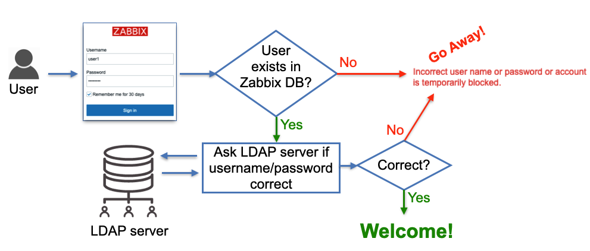
2.3 LDAP users authentication
As shown on the diagram a user that tries to log in must be pre-created in Zabbix to be able to log in using LDAP. The database user records do not have any fields "saying" that the user will be authenticated via LDAP, it's just users' passwords stored in the database are ignored, instead, Zabbix goes to a LDAP server to verify whether:
- user with a given username exists
- user provided the correct password
no other attributes configured for the user on the LDAP server side are taken into account.
So when Zabbix is used by many users and groups, user management becomes not a very trivial task as new people join different teams (or leave). This problem is addressed by "users provisioning" and we'll cover this topic a bit later. For now let's take a look at how to configure LDAP authentication.
Configure LDAP
In this section, we will be using a custom demo LDAP server with pre-loaded data. You can set this demo environment up to check out the Zabbix LDAP authentication possibilities. Or you can skip the setup of the demo environment if you just want to connect your Zabbix instance to your existing LDAP or AD server.
Set up local demo LDAP server
We believe that it is better to learn this topic by example so we'll be using our own LDAP server that you can spin up in a container for demo purposes. First we will need to ensure that we have a container engine installed.
Install Podman container engine
Red Hat
SUSE
Ubuntu
What is Podman
Podman is a container engine designed as a drop-in replacement for Docker, but with a daemonless architecture. This means it runs containers directly under the user’s control, improving security and simplicity. Podman is fully compatible with Docker’s CLI and supports rootless containers, making it ideal for development, testing, and production environments where security and isolation are priorities.
Tip
If you want to use Docker instead of Podman, you can just replace any
occurrences of podman in following instructions by docker.
Now we can start containers. Start an OpenLDAP server in a container:
Start an OpenLDAP server in a container with pre-loaded data
For simplicity, all users (including ldap_search) in this test LDAP server
have the word password as their passwords.
Users user1 and user2 is a member of zabbix-admins LDAP group. User
user3 is a member of zabbix-users LDAP group.
???+ tip Tip: use phpLdapAdmin as an LDAP GUI
To visually see LDAP server data (and add your own configuration like users
and groups) you can start this standard container:
```bash
podman run -p 8081:80 -p 4443:443 --name phpldapadmin --hostname phpldapadmin\
--link openldap-server:ldap-host --env PHPLDAPADMIN_LDAP_HOSTS=ldap-host\
--detach osixia/phpldapadmin:0.9.0
```
Now you can access this LDAP server via https://<ip_address>:4443 (or any
other port you configure to access this Docker container), click Login,
enter “cn=admin,dc=example,dc=org” in Login DN field and “password” in
Password field, click Authenticate. You should see the following structure
of the LDAP server (picture shows ‘zabbix-admins’ group configuration):
{ align=center }
_2.4 LDAP server data_
Configure Zabbix LDAP authentication
Let's configure LDAP server settings in Zabbix. In Zabbix menu select Users |
Authentication | LDAP settings, then check the check-box Enable LDAP
authentication and click Add under Servers (change IP address of your LDAP
server and port number according to your set up):
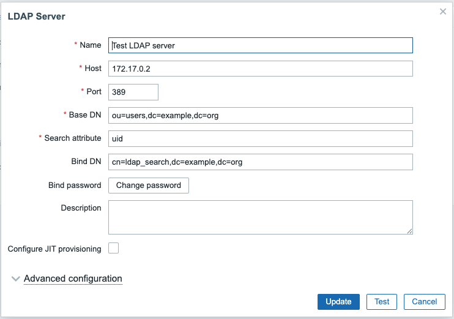{ align=center }
2.5 LDAP server settings in Zabbix
Following diagram can help you understand how to configure LDAP server in Zabbix based on your LDAP server data structure:
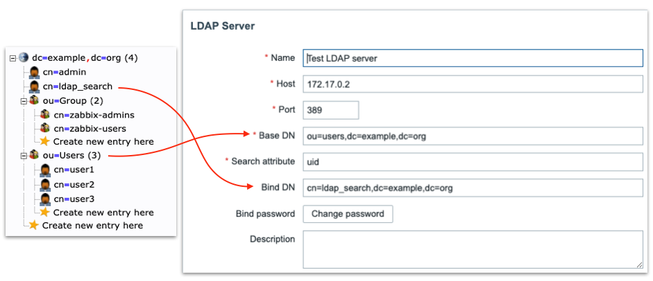
2.6 LDAP server to Zabbix
“Special” Distinguished Name (DN) cn=ldap_search,dc=example,dc=org is used for searching, i.e. Zabbix uses this DN to connect to LDAP server and of course when you connect to LDAP server you need to be authenticated – this is why you need to provide Bind password. This DN should have access to a sub-tree in LDAP data hierarchy where all your users are configured. In our case all the users configured “under” ou=Users,dc=example,dc=org, this DN is called base DN and used by Zabbix as so to say “starting point” to start searching.
Anonymous LDAP binding
Technically it is possible to bind to the LDAP server anonymously, without providing a password but this is a huge breach in security as the whole users sub-tree becomes available for anonymous (unauthenticated) search, i.e. effectively exposed to any LDAP client that can connect to LDAP server over TCP. The LDAP server we deployed previously in Docker container does not provide this functionality.
Click Test button and enter user1 and password in the respective fields,
the test should be successful confirming Zabbix can authenticate users against
LDAP server.
Tip
We can add multiple LDAP servers and use them for different User groups.
To test real users login using LDAP authentication we need to create user groups
and users in Zabbix. In Zabbix menu select Users | User groups. Make sure
Zabbix administrators group exists (we'll need it later) and create new group
Zabbix users by clicking Create user group button. Enter "Zabbix users" in
Group name field, select "LDAP" in Frontend access drop-down that will make
Zabbix to authenticate users belonging to this group against LDAP server and in
LDAP server drop-down select LDAP server we earlier configured "Test LDAP
server". Click Add button to create this User group:
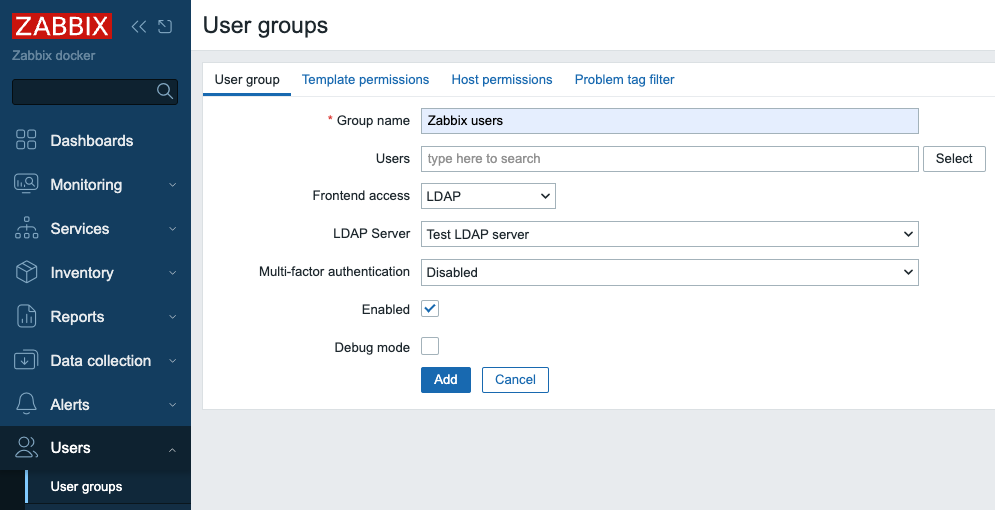{ align=center }
2.7 Add user group in zabbix
Now we need to create our test user. In Zabbix menu select Users | Users and
click Create user button. Then enter "user3" in Username field. Select
"Zabbix users" in Groups field. What you enter in Password and Password
(once again) fields does not matter as Zabbix will not try to use this
password, instead it will go to LDAP server to authenticate this user since it's
a member of the User group that has authentication method LDAP, just make sure
you enter the same string in these two fields and it satisfied your password
strength policy defined in Users | Authentication.
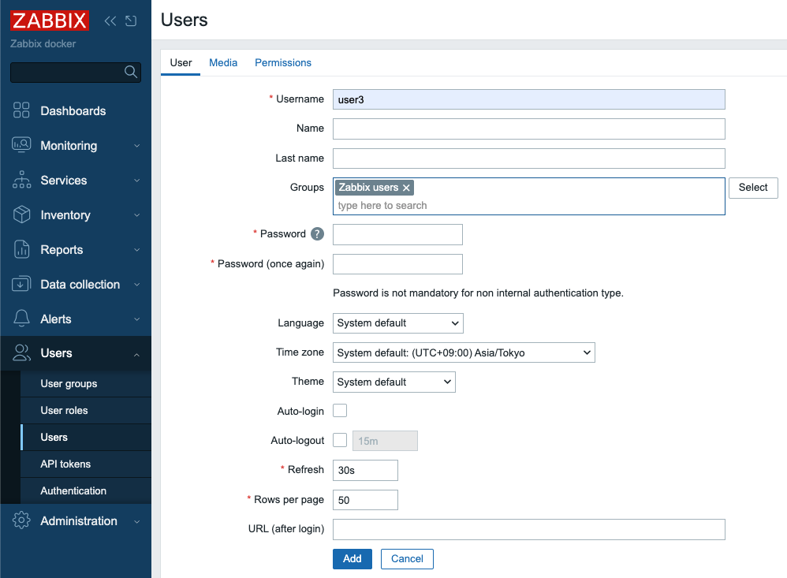
2.8 Add user in Zabbix
Then click Permissions tab and select "User role" in Role field:
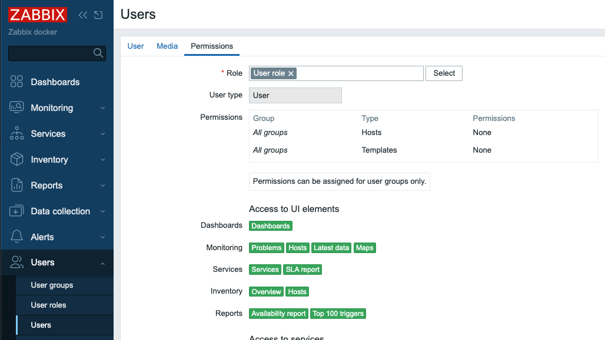
2.9 Add user in Zabbix - permissions
Click Add button to create the user.
We are ready to test our LDAP server authentication! Click Sign out in Zabbix
menu and login with "user3" as Username and "password" as Password, if you
carefully followed the steps above you should successfully login with User role
permissions.
Click Sign out again and login as Admin again to proceed.
Just-in-Time user provisioning
Now let's talk about really cool feature Zabbix provides - "Just-in-Time user provisioning (JIT) available since Zabbix 6.4.
This picture illustrates on high level how it works: 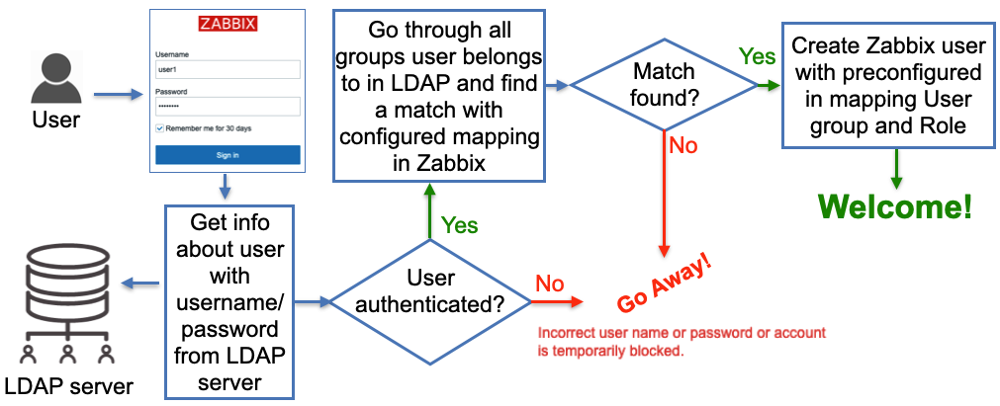
2.10 LDAP JIT explained
Here when Zabbix gets a username and password from the Zabbix Login form it goes
to the LDAP server and gets all the information available for this user
including his/her LDAP groups membership and e-mail address. Obviously, it gets
all that only if the correct (from LDAP server perspective) username and
password were provided. Then Zabbix goes through pre-configured mapping that
defines users from which LDAP group goes to which Zabbix user group. If at
least one match is found then a Zabbix user is created in the Zabbix database
belonging to a Zabbix user group and having a Zabbix user role according to
configured “match”. So far sounds pretty simple, right? Now let’s go into
details about how all this should be configured.
In Users | Authentication we need to do two things:
-
Set
Default authenticationto LDAP. When JIT is turned off then type of authentication is defined based on the User group a user that tries to login belongs to. In case of JIT the user does not exist in Zabbix yet thus obviously does not belong to any User group so Default method authentication is used and we want it to be LDAP. -
Provide
Deprovisioned users group. This group must be literally disabled otherwise you won't be able to select it here. This is the Zabbix user group where all de-provisioned users will be put into so effectively will get disabled from accessing Zabbix.
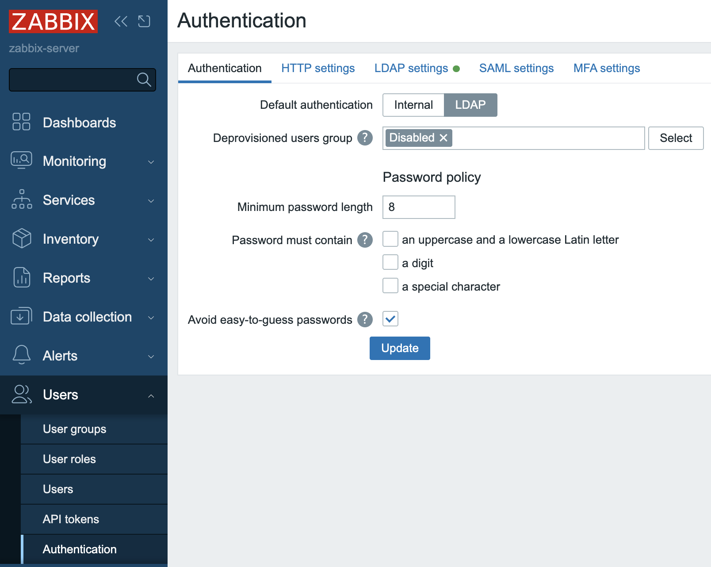{ align=center }
2.11 Default authentication
Click Update button`.
- Enable JIT provisioning check-box which obviously needs to be checked for this
feature to work. It's done in our Test LDAP server configuration - select
Users | Authentication | LDAP settingsand click on our server inServerssection. After enabling this check-box we'll see some other fields related to JIT to be filled in and what we put in there depends on the method we choose to perform JIT.
Group configuration method “memberOf”
All users in our LDAP server have memberOf attribute which defines what LDAP groups every user belongs to, e.g. if we perform a LDAP query for user1 user we’ll get that its memberOf attribute has this value:
memberOf: cn=zabbix-admins,ou=Group,dc=example,dc=org
Note, that your real LDAP server can have totally different LDAP attribute that
provides users’ group membership, and of course, you can easily configure what
attribute to use when searching for user’s LDAP groups by putting it into User
group membership attribute field:
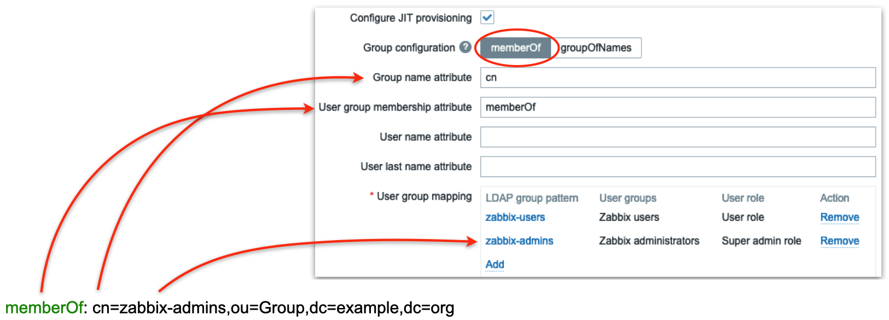
2.12 LDAP groups mapping
In the picture above we are telling Zabbix to use memberOf attribute to extract DN defining user’s group membership (in this case it is cn=zabbix-admins,out=Group,dc=example,dc=org) and take only cn attribute from that DN (in this case it is zabbix-admins) to use in searching for a match in User group mapping rules. Then we define as many mapping rules as we want. In the picture above we have two rules:
- All users belonging to zabbix-users LDAP group will be created in Zabbix as members of Zabbix users group with User role
- All users belonging to zabbix-admins LDAP group will be created in Zabbix as members of Zabbix administrators group with Super admin role
Group configuration method “groupOfNames”
There is another method of finding users’ group membership called “groupOfNames” it is not as efficient as “memberOf” method but can provide much more flexibility if needed. Here Zabbix is not querying LDAP server for a user instead it is searching for LDAP groups based on a given criterion (filter). It’s easier to explain with pictures depicting an example:
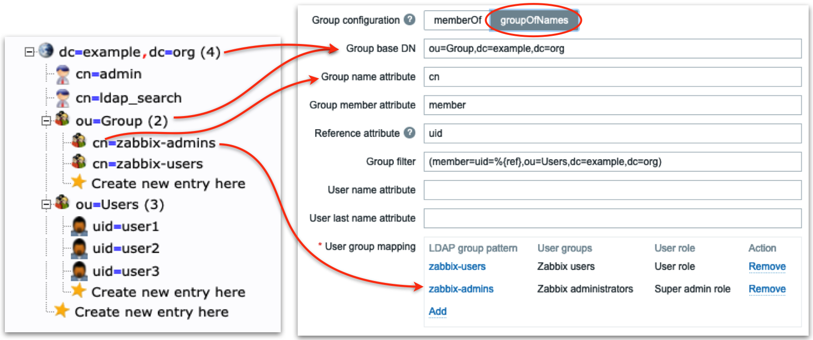
2.13 LDAP server groupOfNames
Firstly we define LDAP “sub-tree” where Zabbix will be searching for LDAP groups
– note ou=Group,dc=example,dc=org in Group base DN field. Then in the field
Group name attribute field we what attribute to use when we search in mapping
rules (in this case we take cn, i.e. only zabbix-admins from full DN
cn=zabbix-admins,ou=Group,dc=example,dc=org). Each LDAP group in our LDAP
server has member attribute that has all users that belong to this LDAP group
(look at the right picture) so we put member in Group member attribute
field. Each user’s DN will help us construct Group filter field. Now pay
attention: Reference attribute field defines what LDAP user’s attribute Zabbix
will use in the Group filter, i.e. %{ref} will be replaced with the value of
this attribute (here we are talking about the user’s attributes – we already
authenticated this user, i.e. got all its attributes from LDAP server). To sum
up what I've said above Zabbix:
- Authenticates the user with entered Username and Password against LDAP server getting all user’s LDAP attributes
- Uses
Reference attributeandGroup filterfields to construct a filter (when user1 logs in the filter will be (member=uid=user1,ou=Users,dc=example, dc=org) - Performs LDAP query to get all LDAP groups with member attribute (configured
in
Group member attributefield) containing constructed in step 2) filter - Goes through all LDAP groups received in step 3) and picks
cnattribute (configured inGroup name attributefield) and finds a match in User group mapping rules
Looks a bit complicated but all you really need to know is the structure of your LDAP data.
Ready to test
Now when you login with user1 or user2 username then these users will be created by Zabbix and put into Zabbix administrators user group, when you login with user3 username then this user will be created by Zabbix and put into Zabbix users user group:
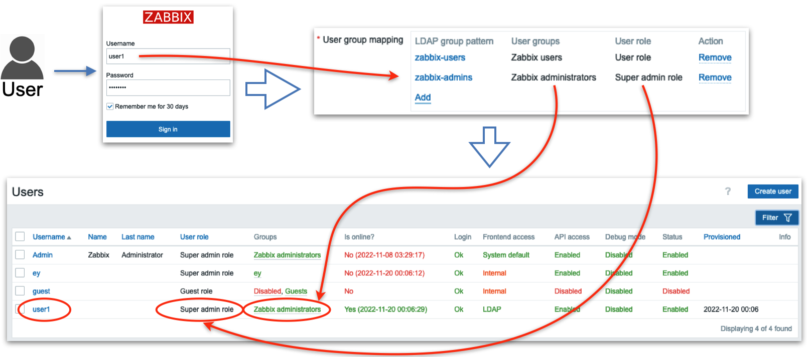
2.14 Test user1
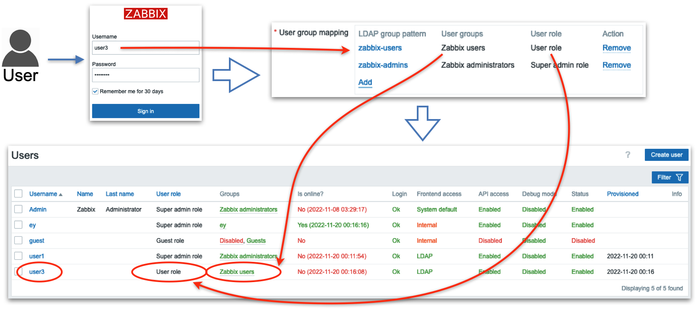
2.15 Test user3
Conclusion
Integrating Zabbix with LDAP—or specifically, Active Directory elevates your system's authentication capabilities by leveraging existing organizational credentials. It allows users to log in using familiar domain credentials, while Zabbix offloads the password verification process to a trusted external directory. Notably, even when configuring LDAP authentication, corresponding user accounts must still exist within Zabbix though their internal passwords become irrelevant once external authentication is active.
Particularly powerful is the Just-In-Time (JIT) provisioning feature: this enables Zabbix to dynamically create user accounts upon first successful LDAP login streamlining onboarding and reducing manual administration. Beyond that, JIT supports ongoing synchronization updating user roles, group memberships, or even user removals in Zabbix to mirror changes in LDAP—either when a user logs in or during configured provisioning intervals.
Important configuration details such as case sensitivity, authentication binding methods, search filters, and group mapping need careful attention to ensure reliable and secure operation. And while LDAP offers seamless integration, Zabbix still maintains control over roles, permissions, and access behavior through its own user and user group models Zabbix.
In sum, LDAP/AD authentication offers a scalable, secure, and enterprise-aligned approach to centralizing identity management in Zabbix. With flexible provisioning and synchronization, organizations can reduce administrative load while reinforcing consistency across their access control and authentication strategy.
Questions
-
What are the main benefits of integrating Zabbix authentication with LDAP or Active Directory compared to using only internal Zabbix accounts?
-
Why must a user still exist in Zabbix even when LDAP authentication is enabled, and what role does the internal password play in that case?
-
How does Just-In-Time (JIT) provisioning simplify user management in Zabbix, and what potential risks or caveats should an administrator consider when enabling it?
-
What is the difference between user authentication and user authorization in the context of LDAP integration with Zabbix? (Hint: Authentication verifies credentials, while authorization determines permissions inside Zabbix.)
-
Imagine an administrator incorrectly configures the LDAP search filter. What issues might users encounter when attempting to log in, and how could you troubleshoot the problem?
-
How could LDAP group mappings be used to streamline permission assignment in Zabbix? Can you think of an example from your own environment?
-
If an organization disables a user account in Active Directory, how does JIT provisioning ensure that Zabbix access is also updated? What would happen if JIT was not enabled?